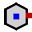
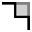

Ändra geometrin
I TecZone Bend har du en kraftfull 2D-redigerare för skisser som du kan använda för att ändra, uppstädning eller lägga till geometri. Använd kortkommandot S för att öppna skissläget. Redigeraren visar delen i utvecklad vy.

I den utvecklade vyn klickar du på ikonen Rensa  eller trycker på kortkommandot S.
eller trycker på kortkommandot S.
En meny öppnas med olika ikoner för att bearbeta utvecklingen:

Skisspanel
| Ikon | Symbol | Betydelse |
|---|---|---|
|
Välj |
Välj objekt, linjer, poster osv. |
|
Linje |
Rita en linje |
|
Anslutna linjer |
Rita valfritt antal rader |
|
Parallell |
Rita en parallell till en linje |
|
Normal |
Rita en tangent till en kurva |
|
Bockningslinje |
Rita en normal linje till en linje |
|
Mittpunktsbockning |
Rita en bockningslinje |
|
2-punktscirkelbåge |
Rita en cirkelbåge från en mittpunkt, startpunkt och slutpunkt |
|
3-punktscirkelbåge |
Rita en cirkelbåge genom två definierade punkter (start- och slutpunkt) |
|
Tangentiell cirkelbåge |
Rita en cirkelbåge som är tangentiell till skisselementen |
|
Rektangel |
Rita en rektangel |
|
Mittpunktsrektangel |
Rita en rektangel från mitten |
|
Cirkel |
Rita en cirkel Välj cirkelns mittpunkt och dra markören för att definiera radien eller ange ett värde för radien. |
|
Omkrets med 2 punkter |
Rita en cirkel enligt omkretsen. Välj en punkt på omkretsen, sedan en andra punkt och en tredje punkt. |
|
Omkrets med 3 punkter |
Rita en cirkel enligt omkretsen. Välj en punkt på omkretsen, sedan en andra punkt och en tredje punkt. |
|
Cirkel med 2 tangenter |
Rita en cirkel med två tangenter. Ange cirkelns diameter, välj sedan den första tangenten och sedan den andra tangenten. |
|
Cirkel med 3 tangenter |
Rita en cirkel med tre tangenter. Ange cirkelns diameter, välj sedan den första tangenten, sedan den andra tangenten och därefter den tredje tangenten. |
|
Polygon mittpunkt – hörnpunkt |
Rita en cirkel med tre tangenter. Ange cirkelns diameter, välj sedan den första tangenten, sedan den andra tangenten och därefter den tredje tangenten. |
 |
Polygon mittpunkt – mitt sidokant |
Rita en polygon. Ange antalet sidor och välj en mittpunkt och mitten av en sidokant. |
|
Polygon med sidokant |
Rita en polygon. Ange antalet sidor och definiera start- och slutpunkten för en sida. |
|
Avrundning |
Rundar hörnet vid hörnpunkt mellan två skisselement med en angiven radie, varigenom en tangentiell cirkelbåge skapas. |
|
Avfasning |
Skapar en avfasning på hörnet vid skärningspunkten mellan två skisselement. |
|
Hörntrimmning rund |
Trimma hörnet vid skärningspunkten mellan två skisselement med en angiven radie. |
 |
Hörntrimmning kantig |
Trimma hörnet vid skärningspunkten mellan två skisselement med en rektangel. Storleken på rektangeln kan anges i förväg. |
|
Fritt snitt kvadratiskt |
Skapa en rektangulär friskärning. Ange hörnavstånd, fri skärningsdjup och välj sedan ett hörn. |
|
Fritt snitt ovalt hål |
Skapa en avlångt hålformad friskärning. Ange hörnavstånd, fri skärningsbredd, fri skärningsdjup och välj sedan ett hörn. |
|
Fritt snitt triangulärt |
Skapa en triangulär friskärning. Ange hörnavstånd, fri skärningsbredd, fri skärningsdjup och välj sedan ett hörn. |
|
Nyckelhål |
Skapa ett nyckelhål i en cirkel med de angivna värdena. |
|
Full avrundning 3 segment |
Runda tre sammankopplade skisselement. |
|
Förläng element |
Välj det skisselement som ska förlängas. |
|
Trimma element |
Välj det skisselement som ska trimmas. |
|
Sammansmälta |
Används för att trimma och sammanfoga flera separata polylinjer till en. |
|
Offset element |
Förskjut ett eller flera skisselement, skissade modellkanter eller modellytor med ett angivet avstånd. |
|
Flytta |
Välj ett skisselement med ctrl, välj en referenspunkt och flytta skisselementet. |
|
Vrida |
Välj ett skisselement med ctrl, välj en rotationscentrumpunkt, sedan en startpunkt och en slutpunkt för att rotera skisselementet. |
|
Skala |
Välj ett skisselement med ctrl, välj en baspunkt, sedan en startreferenspunkt och en slutreferenspunkt för att skala skisselementet. |
|
Spegla |
Välj ett skisselement med ctrl, sedan början på spegellinjen och sedan slutet på spegellinjen för att spegla skisselementet. |
Linjärt mönster |
Använd linjära mönster för att skapa flera referenskörda kopior av ett eller flera skisselement som du kan placera med lika avstånd längs en eller två linjära banor. Klicka på det linjära mönstret och ange önskade värden. |
|
|
Cirkelmönster |
Använd cirkulära mönster för att skapa flera referenskörda kopior av ett eller flera skisselement som du kan placera med lika avstånd runt en axel. Klicka på det cirkulära mönstret och ange önskade värden. |
|
Kombinera ytor |
Välj två eller flera slutna skisselement för att kombinera ytor med varandra. |
|
Snittyta |
Välj två eller flera slutna skisselement för att generera ett skärområde för valda element. |
|
Trimma yta |
Välj två eller flera slutna skisselement för att trimma ytan. |
|
Kopiera fritt snitt |
Med det här verktyget kan du skapa flera kopior av en skåra längs en kant. Ange först avståndet mellan kopiorna och antalet kopior av skåran som du vill skapa. Välj sedan skåran genom att klicka på de två linjesegmenten som ligger intill skåran. |
|
Radera fritt snitt |
Med det här verktyget kan du ta bort en skåra i ett hörn eller längs ett linjesegment. Klicka på de två linjesegmenten som ligger intill skåran så tas skåran bort. |
|
Spegla fritt snitt |
Med det här verktyget kan du spegla en skåra i ett hörn eller längs ett linjesegment. Klicka på de två linjesegmenten som ligger intill skåran så speglas skåran. |
|
Kurvkontur |
För att starta en ny spline klickar du på startpunkten och när du klickar på efterföljande punkter skapas splinen. Om du vill stänga splinen trycker du på ALT-tangenten och klickar sedan på |
|
Profil |
Skriv in baslängd, flänshöjd, tjocklek, flänsvinkel, inre radie och tryck på Enter för att skapa en profil. |
|
Text |
Används för att rita text som kommer att markeras på delen av lasermaskinen. När du klickar på denna verktygsknapp visas inmatningsfält för text, storlek och rotationsvinkel. |
|
Text |
Används för att ta formerna på tecken i valfritt TrueType-teckensnitt och konvertera dem till polylinjer. Laserverktyg kan sedan appliceras på dessa polylinjer, och de kan skäras.Första gången du klickar på denna knapp visas dialogrutan Font, där du kan välja vilket teckensnitt som ska användas för texten. |
|
Standardformer |
Används för att skapa flera vanliga former och infoga dem i ritningen. När du klickar på den här knappen visas dialogrutan Skapa form, där du kan välja från paletten med vanliga former som listas. |
|
Enkel dimensionering |
Välj den första dimensioneringspunkten, sedan den andra dimensioneringspunkten och placera dimensioneringslinjen. |
|
Referensdimensionering |
Välj den första dimensioneringspunkten, sedan den andra dimensioneringspunkten och placera dimensioneringslinjen. |
|
Måttkedja |
Välj den första dimensioneringspunkten, sedan den andra dimensioneringspunkten, placera dimensioneringslinjen och välj nästa dimensioneringspunkt. |
|
Horisontellt ordinatamått |
Ordinatdimensioner är en uppsättning dimensioner som mäts från ordinatnollpunkten i ritningen. Välj en referenspunkt och placera dimensioneringen. |
|
Vertikalt ordinatamått |
Ordinatdimensioner är en uppsättning dimensioner som mäts från ordinatnollpunkten i ritningen. Välj en referenspunkt och placera dimensioneringen. |
|
Vinkeldimensionering |
Skapa en dimensionering för en vinkel. Välj den första linjen och sedan den andra linjen som du vill måttsätta vinkeln på. |
|
Radiedimensionering |
Skapa en dimensionering för en radie. Välj den cirkel som du vill dimensionera radien på. Dimensionera diametern med ctrl. |
|
Radiedimensionering med heldragen anvisningslinje |
Skapa en dimensionering med kontinuerlig ledare för en radie. Välj den cirkel som du vill dimensionera radien på. Dimensionera diametern med ctrl. |
|
Märkning |
Används för att lägga till anteckningar till ritningen i form av bildtexter. För att skapa en callout, skriv in texten som ska visas, klicka för att ange var pilen ska peka och klicka igen för att ange var texten ska placeras. |
|
Segment dimensionering |
Används för att lägga till dimensionering för raka och böjda segment. Klicka på segmentet som ska dimensioneras och klicka igen för att placera dimensionen. Eller håll ned och klicka på ett segment för att placera dimensionen automatiskt. |